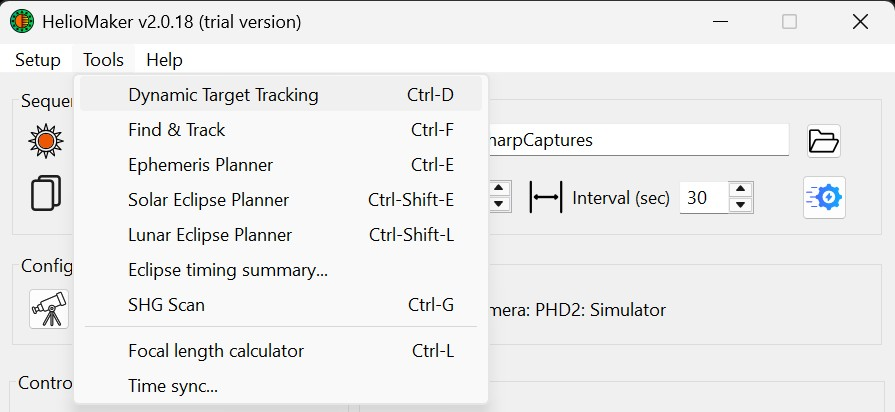
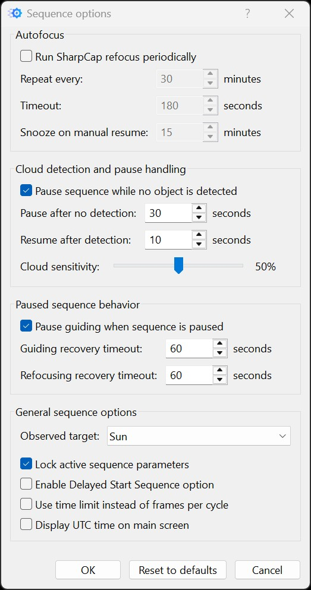
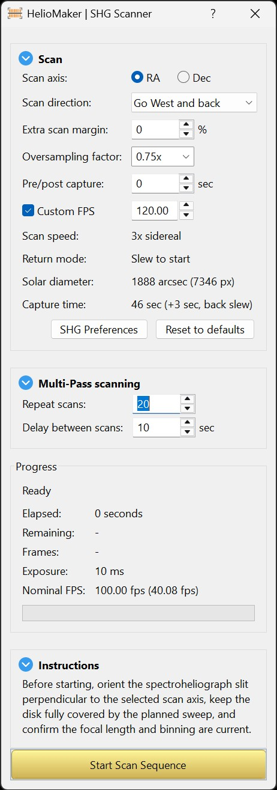
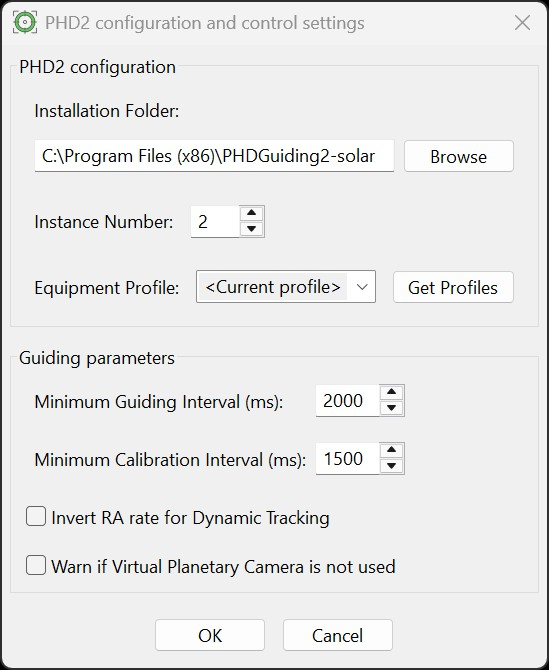
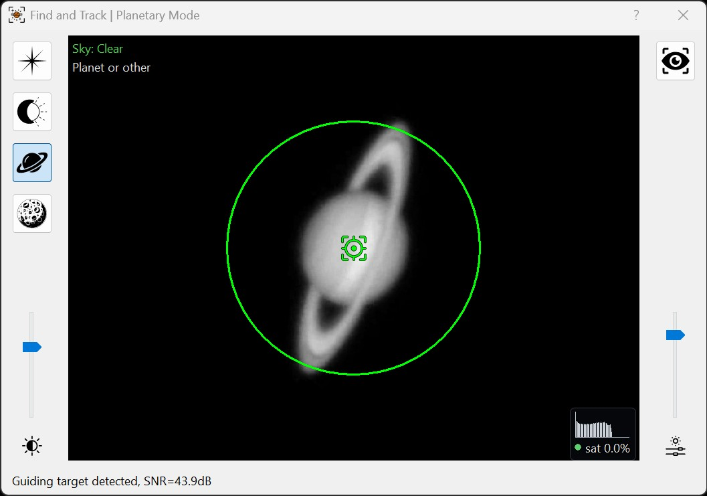
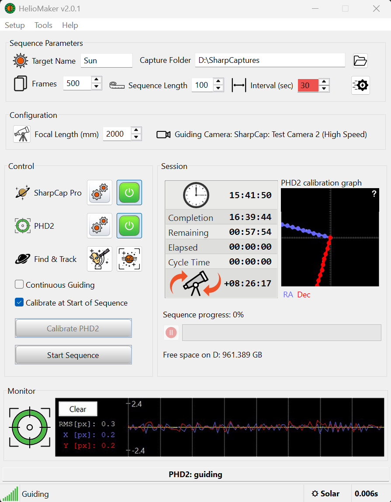

HelioMaker continues to evolve to better support solar, lunar, and planetary imaging workflows. This release brings a more stable lunar eclipse workflow, an improved surface tracking algorithm, and further reliability improvements for camera and PHD2 communication.
Known limit: when PHD2 guides with its own camera and cannot share its camera images with HelioMaker, HelioMaker says so when PHD2 is linked. For that session PHD2 guides with its built-in planetary detection, and the Sequence Options Run SharpCap refocus periodically and Pause sequence while no object is detected have no effect.
This release introduces the License Management PIN, a user-defined secret that adds an extra protection layer for managing existing license activations. The License Manager workflow has also been improved to make it easier to review activation status and manage license activations directly from the dialog.
The new Renew License workflow supports license renewal with carry-over of remaining license days from an existing 1-year license to a new license. This applies when renewing to another 1-year plan or upgrading to a lifetime license, when the renewal conditions are met.
Introduced the new Dynamic Target Tracking tool, designed to update the mount tracking rate in real time for major solar system bodies, including the Sun and the Moon. For beginners, the main idea is simple: telescope mounts usually use one of the standard built-in tracking rates, such as sidereal, solar, or lunar. Dynamic Target Tracking is a more accurate replacement for those standard solar-system rates, because HelioMaker continually updates the mount rate to follow the actual motion of the selected target throughout the session, using computational models that account for the observer location, current time, and selected target.
As a premium feature, Dynamic Target Tracking is available after HelioMaker activation.
The tool also adds Slew To Target, allowing HelioMaker to command a supervised mount slew to the selected supported target when the mount, target, and observer-location state allow it. The slew can be stopped from HelioMaker when immediate interruption is needed.
Dynamic Target Tracking features depend on mount support for custom tracking rates. If the connected mount does not support custom RA/Dec tracking rates, HelioMaker uses the best legacy tracking-rate fallback for the selected target, such as solar, lunar, or sidereal. For generated comet and minor-object ephemeris plans, the fallback uses PHD2 comet tool mode and automates it by applying the comet or minor-object drift rate in real time.
In this context, dynamic tracking does not mean guiding or any other closed-loop tracking method. It refers only to applying a real-time target tracking rate computed by HelioMaker from the target ephemeris model. With the introduction of Dynamic Target Tracking, HelioMaker effectively provides a two-layered correction model: first, it selects and applies the proper tracking model for the chosen target using this new tool; second, PHD2 continues issuing guiding corrections based on the object's detected position, with detection performed by HelioMaker.
This tool is especially important for lunar imaging. By applying custom rates dynamically updated in real time by HelioMaker, lunar guiding drift can be reduced very substantially. If the mount is properly polar aligned, this can result in practically no orthogonality error during PHD2 calibration on the Moon. It is also very helpful when using PHD2's Guiding Assistant for daytime polar alignment with the Moon as the selected target, because the measured drift becomes more accurate when the mount is already following the correct lunar motion.
The same principle also helps solar imaging, both for PHD2 calibration and for using Guiding Assistant to refine daytime polar alignment, although usually to a lesser extent than for the Moon. Real-time custom rates are superior to relying on the mount's built-in standard solar or lunar tracking rates, which are static and only approximate the actual motion of the target. The greatest improvement is expected for the Moon, because its required tracking adjustments are much larger than for the Sun or other planets due to distance and orbital mechanics.
The tool also includes distant planets such as Jupiter and Saturn for completeness, but these targets are generally affected much less and will not usually show a major practical improvement from this feature.
The new Ephemeris Planner creates ephemeris data for natural solar-system minor bodies, including comets, asteroids, planets and moons, over a user-selected time window. Artificial satellites are not supported. A planned object can later be loaded into Dynamic Target Tracking tool for precise centering, tracking and guiding, optionally using the enhanced Comet Tracking feature of the custom PHD2 version.
The planner can be opened from the Tools menu or from the Dynamic Target Tracking dialog. It supports draft, fine, and precise planning modes, displays planned object visibility, and can use confirmed observer-location data when generating the request.
HelioMaker now includes a Tools menu for opening specialized utilities from one place. This menu includes entries such as Dynamic Target Tracking, Find & Track, Ephemeris Planner, Solar Eclipse Planner, Lunar Eclipse Planner, SHG Scanner, and Focal Length Calculator.

The new Solar Eclipse Planner and Sequencer provides a dedicated workflow for planning, rehearsing, and running an automated total solar-eclipse capture. The planner calculates the local eclipse circumstances for the observer site, presents the contact times and geometry, and builds a phase-based capture plan covering the partial phases, thin crescents, diamond-ring transitions, and totality.
Each phase can define its camera exposure, gain, bracket, interval, cycle count, and guiding behavior. Plan preferences also cover camera configuration, eclipse safety mode, optional refocusing, timing and location inputs, and other run-wide choices. A plan-approval step helps distinguish the rehearsed plan from later unverified edits.
Dry-run and wet-run simulation options let the operator practise the complete sequence before eclipse day. Before arming, the pre-flight dialog checks the plan, camera, focus, guiding, time and location, storage, and other readiness conditions. During the event, the run console displays the active phase, local and UTC clocks, capture progress, filter cues, guiding and refocus state, and missed or rejected work. The workflow includes visual and audio prompts, but the operator remains responsible for solar filtration and safe equipment use.
See the Solar Eclipse Imaging introduction. Detailed, task-oriented instructions are supplied separately in the Solar Eclipse Imaging Manual.
The Lunar Eclipse Planner brings together event search, phase-by-phase exposure planning, rehearsal, pre-flight checks, and automated capture. This release improves coordination between imaging and guiding when sharing a camera, phase transitions, and the reporting of completed and missed captures.
Camera startup and recovery now allow for long exposures before treating missing frames as a camera fault. Run cancellation and autofocus cleanup have also been improved, along with recovery from interrupted SharpCap or PHD2 connections. Rehearse the intended plan with your equipment before eclipse night to verify capture, guiding, and recovery with your rig.
Known limit: Lunar eclipse diagnostics are recorded in HelioMaker's general debug log. A separate log for each lunar run and a post-run capture-timing report are not yet available. When reporting a problem, retain the debug log and saved plan.
Detailed instructions are supplied separately in the standalone Lunar Eclipse Imaging Guide.
The new Sequence Options dialog groups sequence workflow settings in one place. It covers automatic SharpCap refocusing, detection-loss pause/resume behavior, PHD2 pause handling while the sequence is paused, guiding recovery timeouts, delayed start, capture time-limit mode, and locking active sequence parameters. The new Observed target choice identifies the camera target for cloud monitoring and its allowance for natural airmass changes.

A new experimental SHG Scanner automates spectroheliograph scanning with SharpCap Pro capture. It can be opened from the new Tools menu, or from the Dynamic Target Tracking dialog when the Sun is selected.
The scanner examines the mount's capabilities and selects the most suitable scanning method for the connected mount. When using an additional guide scope and guide camera (protected by an appropriate solar filter), multipass scanning can be enhanced by automatically recentering the Sun between scan passes using PHD2 guiding. Scanning in Ra and Dec is supported.

The Advanced Settings dialog now remains focused on lower-level configuration, including communication port, PHD2 guiding and calibration settling parameters, detection settings, and selected global application behavior. Sequence workflow options previously present there, including delayed sequence start and capture burst duration mode, have moved to the new Sequence Options dialog.
Added a new option in the PHD2 Config dialog to invert the RA rate for Dynamic Target Tracking. This helps match the tracking direction to mount-specific behavior on mounts that expect the opposite RA-rate sign.

HelioMaker now shows a PHD2 Calibration Pre-flight Dialog whenever PHD2 calibration is started from HelioMaker. For solar and lunar calibration, HelioMaker uses accurate real-time ephemeris declination for the Sun or Moon instead of relying only on mount star-alignment data. For other targets, the dialog allows the user to select the appropriate target type before continuing.
Surface Features tracking now manages its reference image more carefully when the ROI, frame geometry, or scene quality changes. Improved feature matching, reference selection, signal-quality measurements, and fallback tracking reduce unnecessary reference resets and help retain a stable surface lock through changing seeing. The enhanced tracking option remains enabled by default and can be disabled in Advanced Settings when troubleshooting unusual equipment or image conditions.
In Find & Track's Surface Features mode, the lock sensitivity slider now has three positions: the bottom favors the most accurate tracking with a rich set of higher-quality features, the middle is the default, and the top requires the minimum number of trackable features. The top setting can help lock onto a target with few unique features when the other positions cannot detect it, though tracking performance may be inferior. Double-click the tuning icon to restore the default.
A new landscape/portrait ROI flip button lets you orient the surface tracking area to better fit the target. Change the orientation while guiding is stopped, then wait for a stable lock before restarting guiding.
Surface Tracking Tolerance (px) in Advanced Settings now expresses the allowed jitter of matched surface features in pixels. Existing saved thresholds are converted automatically. This controls when the tracking reference is replaced, while the Find & Track slider controls the feature requirement for locking.
Full Disk/Crescent detection has received major robustness improvements for partial eclipses, thin crescents, faint limbs, haze, and temporary obstruction. Improved contour validation, complementary-arc checks, circle refinement, radius locking, and adaptive confidence assessment help reject false fits without making the detector slow to recover after a genuine telescope movement or brief loss of view.
Re-acquisition is now context-sensitive: the initial search can cover the full useful frame, while an auto-find request during guiding is constrained around the established target. Temporal filtering adapts to idle, calibration, and guiding states, and is reset deliberately after a user move, ROI change, frame size change, or other action that invalidates the previous position history.
Planetary and Surface Features modes also include stronger input validation, exception handling, frame geometry handling, and signal-quality reporting. Detector readouts now provide clearer fit, feature, signal, stability, and exposure information so a poor camera image can be distinguished from an incorrectly tuned detector.
A new detection and tracking module featuring improved algorithms capable of reliably detecting and tracking almost any natural celestial body, including the Sun, Moon, planets, and stars (satellites are not supported). This module provides four distinct detection modes: Star Mode (for lucky imaging or Live Stacking in SharpCap Pro), Crescent and Full Disk, Planetary, and Surface Features. The Planetary mode is optimized for detecting and tracking planets such as Saturn and Jupiter but can also be used to track the full solar or lunar disk, as well as other planets. The tool is designed to make it easier and faster to fine-tune detection parameters and adjust them during an imaging session when needed.
Note: In this context, "detection and tracking" refers to identifying and monitoring the position of a celestial object within the field of view. This is not the same as PHD2 guiding, which uses the detected position to control the mount by sending guiding corrections. Guiding is a closed-loop process performed by PHD2, using either its own detection methods (such as star detection) or position data provided by HelioMaker. This process applies guiding pulses to keep the target as stable as possible within the field of view.
To clarify, this tool is not related to mount tracking or tracking rate settings. Those must be configured separately, for example, using the mount's control software or PHD2's Solar and Planetary Guiding Tool. When imaging the Sun or Moon, make sure to set the appropriate solar or lunar tracking rates in the mount's settings, as the Find & Track tool does not manage those parameters.
Find & Track now provides a continuous live view and the same detector choices when PHD2 uses a physical camera connected directly to PHD2. HelioMaker performs Full Disk/Crescent, Planetary, and Surface Features detection and supplies the result to PHD2 for guiding. If the new live detection link is unavailable, PHD2 automatically remains on its built-in detector and HelioMaker explains the fallback.
An existing full-disk or crescent detection can be adopted when HelioMaker connects, avoiding the need to repeat object-size and sensitivity setup. Camera binning and large-frame scaling are handled automatically. Planetary and Surface Features are active-license features in both camera arrangements.
Full Disk/Crescent mode now includes automatic first acquisition, a constrained re-acquisition action while guiding, an optional movable and resizable search zone, and direct radius-tolerance adjustment. Surface Features ROI size is now adjusted directly with the mouse wheel in Find & Track instead of through Advanced Settings.
A live exposure histogram and plain-language underexposure/overexposure diagnosis help tune camera settings before guiding. The new focal-length assistant measures the Sun or Moon over several live detections and can apply the result to the appropriate primary scope or PHD2 guidescope configuration.

This version introduces an architectural change by moving surface feature detection and tracking to HelioMaker's new Find & Track tool. This change improves performance by taking advantage of HelioMaker's 64-bit processing environment, enabling faster and more efficient detection. The custom PHD2 version continues to support full planetary and crescent disk detection, making it suitable for use both with and without HelioMaker. Users who rely on this detection method can continue using the custom PHD2 independently. HelioMaker users, however, benefit from a fully integrated solution for surface feature tracking at high magnifications, along with new detection modes for guiding on a broader range of celestial targets.
Note: This HelioMaker release requires the updated custom PHD2 version v2.6.14-solar.3.3 or later, which can be downloaded from this GitHub page.
Added automatic daily version check at startup, along with an option to manually check for updates.
While star-based guiding is a standard feature of PHD2, its integration with HelioMaker and SharpCap enables guided lucky imaging of deep sky objects using a single telescope and camera. This approach simplifies the overall setup and helps reduce equipment costs.
This release includes extensive reliability work across the capture, detection, guiding, and equipment control paths. Detector mode changes now keep the displayed controls, the active HelioMaker detector, and PHD2 state synchronized. ROI and frame-size changes reset only the state that is no longer valid, reducing stale locks and avoiding unnecessary loss of a good detection.
Camera and PHD2 communication is monitored more closely. Missing guide frames, stalled camera delivery, lost application links, and interrupted guiding states are detected explicitly, with bounded recovery or a clear operator warning instead of silently continuing with stale status. Capture results are counted only after confirmation, and the interface no longer presents an old detector time as though it were live.
Thread shutdown, socket cancellation, repeated connection attempts, application close, system sleep and resume, and long-running capture ownership have also been hardened. HelioMaker keeps the computer awake during capture and scanning work and takes a conservative approach when equipment state cannot be verified.
Updated interface with crisp, sharp graphics and full support for Windows High-DPI display devices. Added on-screen display of the currently selected main imaging camera and real-time CPU load indicators, showing the impact of detection and tracking algorithms.
